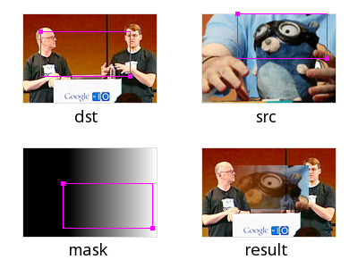
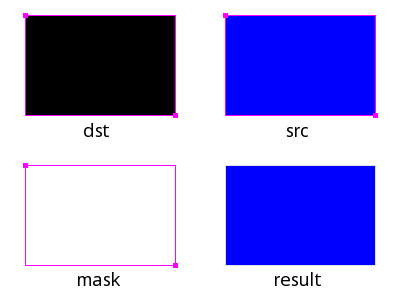
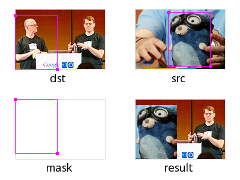
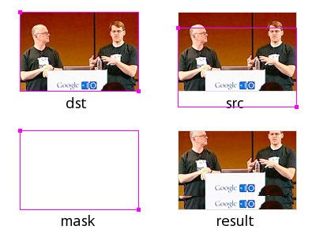
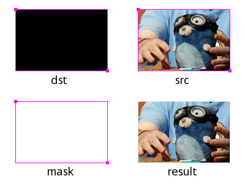
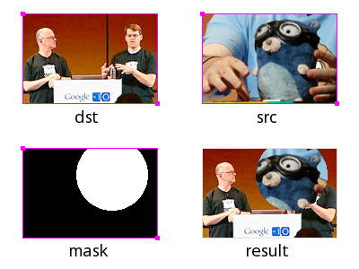
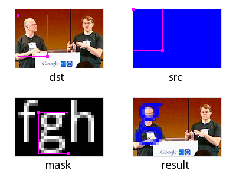

Package image/draw defines only one operation: drawing a source image onto a destination image, through an optional mask image. This one operation is surprisingly versatile and can perform a number of common image manipulation tasks elegantly and efficiently.
Composition is performed pixel by pixel in the style of the Plan 9
graphics library and the X Render extension. The model is based on
the classic "Compositing Digital Images" paper by Porter and Duff,
with an additional mask parameter: dst = (src IN mask) OP dst.
For a fully opaque mask, this reduces to the original Porter-Duff
formula: dst = src OP dst. In Go, a nil mask image is equivalent
to an infinitely sized, fully opaque mask image.
The Porter-Duff paper presented
12 different composition operators,
but with an explicit mask, only 2 of these are needed in practice:
source-over-destination and source. In Go, these operators are
represented by the Over and Src constants. The Over operator
performs the natural layering of a source image over a destination
image: the change to the destination image is smaller where the
source (after masking) is more transparent (that is, has lower
alpha). The Src operator merely copies the source (after masking)
with no regard for the destination image's original content. For
fully opaque source and mask images, the two operators produce the
same output, but the Src operator is usually faster.
Geometric Alignment
Composition requires associating destination pixels with source and
mask pixels. Obviously, this requires destination, source and mask
images, and a composition operator, but it also requires specifying
what rectangle of each image to use. Not every drawing should write
to the entire destination: when updating an animating image, it is
more efficient to only draw the parts of the image that have
changed. Not every drawing should read from the entire source: when
using a sprite that combines many small images into one large one,
only a part of the image is needed. Not every drawing should read
from the entire mask: a mask image that collects a font's glyphs is
similar to a sprite. Thus, drawing also needs to know three
rectangles, one for each image. Since each rectangle has the same
width and height, it suffices to pass a destination rectangle `r`
and two points sp and mp: the source rectangle is equal to r
translated so that r.Min in the destination image aligns with
sp in the source image, and similarly for mp. The effective
rectangle is also clipped to each image's bounds in their
respective co-ordinate space.

The DrawMask
function takes seven arguments, but an explicit mask and mask-point
are usually unnecessary, so the
Draw function takes five:
// Draw calls DrawMask with a nil mask. func Draw(dst Image, r image.Rectangle, src image.Image, sp image.Point, op Op) func DrawMask(dst Image, r image.Rectangle, src image.Image, sp image.Point, mask image.Image, mp image.Point, op Op)
The destination image must be mutable, so the image/draw package
defines a draw.Image
interface which has a Set method.
Filling a Rectangle
To fill a rectangle with a solid color, use an image.Uniform
source. The Uniform type re-interprets a Color as a
practically infinite-sized Image of that color. For those
familiar with the design of Plan 9's draw library, there is no need
for an explicit "repeat bit" in Go's slice-based image types; the
concept is subsumed by Uniform.
To initialize a new image to all-blue:
{{code "/doc/progs/image_draw.go" `/BLUE/` `/STOP/`}}
To reset an image to transparent (or black, if the destination
image's color model cannot represent transparency), use
image.Transparent, which is an image.Uniform:

Copying an Image
To copy from a rectangle sr in the source image to a rectangle
starting at a point dp in the destination, convert the source
rectangle into the destination image's co-ordinate space:
Alternatively:
{{code "/doc/progs/image_draw.go" `/RECT2/` `/STOP/`}}
To copy the entire source image, use sr = src.Bounds().

Scrolling an Image
Scrolling an image is just copying an image to itself, with different destination and source rectangles. Overlapping destination and source images are perfectly valid, just as Go's built-in copy function can handle overlapping destination and source slices. To scroll an image m by 20 pixels:
{{code "/doc/progs/image_draw.go" `/SCROLL/` `/STOP/`}}
Converting an Image to RGBA
The result of decoding an image format might not be an
image.RGBA: decoding a GIF results in an image.Paletted,
decoding a JPEG results in a ycbcr.YCbCr, and the result of
decoding a PNG depends on the image data. To convert any image to
an image.RGBA:

Drawing Through a Mask
To draw an image through a circular mask with center p and radius
r:

Drawing Font Glyphs
To draw a font glyph in blue starting from a point p, draw with
an image.Uniform source and an image.Alpha mask. For
simplicity, we aren't performing any sub-pixel positioning or
rendering, or correcting for a font's height above a baseline.

Performance
The image/draw package implementation demonstrates how to provide
an image manipulation function that is both general purpose, yet
efficient for common cases. The DrawMask function takes arguments
of interface types, but immediately makes type assertions that its
arguments are of specific struct types, corresponding to common
operations like drawing one image.RGBA image onto another, or
drawing an image.Alpha mask (such as a font glyph) onto an
image.RGBA image. If a type assertion succeeds, that type
information is used to run a specialized implementation of the
general algorithm. If the assertions fail, the fallback code path
uses the generic At and Set methods. The fast-paths are purely
a performance optimization; the resultant destination image is the
same either way. In practice, only a small number of special cases
are necessary to support typical applications.
{kind=link}